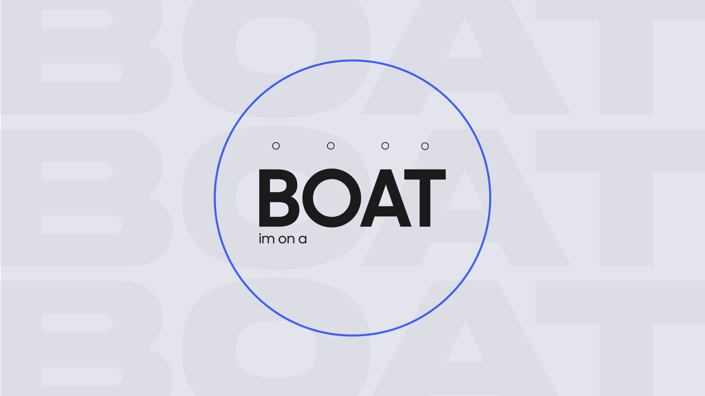
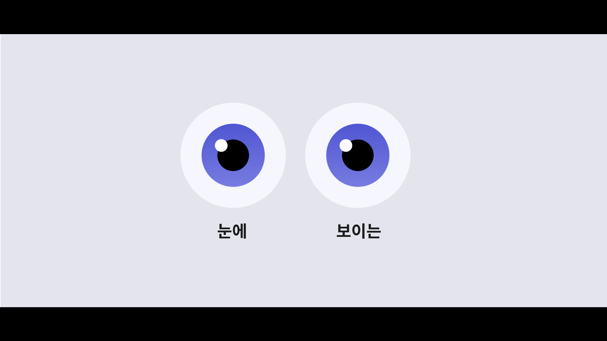
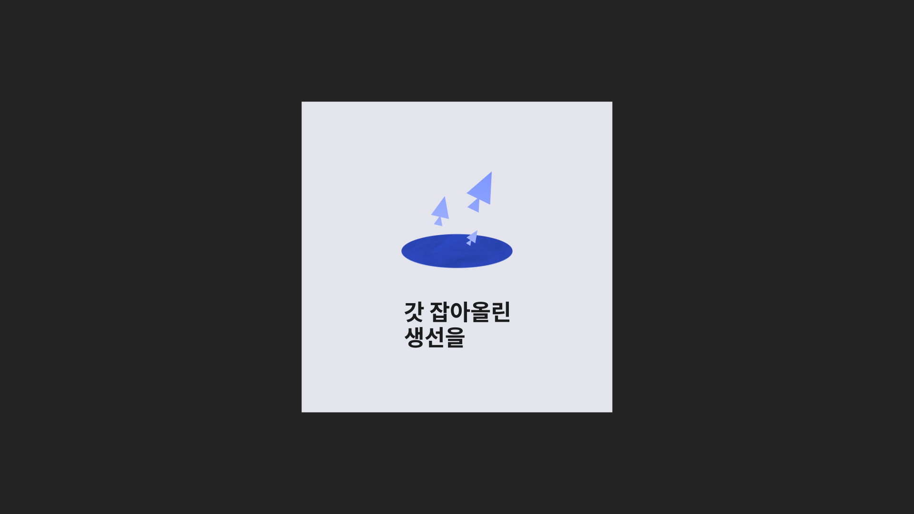

타이포그래피; 죠지 - Boat
Motion Graphics, Music Typography Design — 2024
Overview
노래 '죠지 - Boat'의 시원한 분위기와 가사 내용을 시각적으로 표현하고자 했습니다. 보트라는 주제에서 가져온 푸른 컬러를 메인으로 사용하였습니다.




Motion Graphics, Music Typography Design — 2024
노래 '죠지 - Boat'의 시원한 분위기와 가사 내용을 시각적으로 표현하고자 했습니다. 보트라는 주제에서 가져온 푸른 컬러를 메인으로 사용하였습니다.